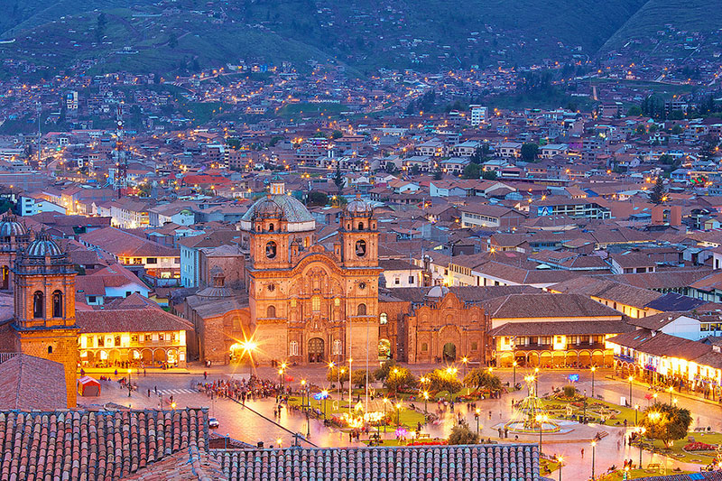

Cusco
Cuzco es una ciudad de los Andes peruanos que fue la capital del Imperio Inca y es conocida por sus restos arqueológicos y la arquitectura colonial española. La Plaza de Armas es el centro de la ciudad antigua, con galerías, balcones de madera tallada y ruinas de murallas incas.
Machu Picchu
 El santuario histórico de Machu Picchu es un área protegida del Perú de más de 35 mil hectáreas que comprende el entorno natural del sitio arqueológico de Machu Picchu, enclavados en la abrupta selva nubosa de las yungas en la vertiente oriental de los Andes peruanos y a ambas márgenes del río Urubamba, que corre en esta sección con dirección noroeste.
Esto permite a esta singular área protegida abarcar lo que podría considerarse uno de los transectos altitudinales más extraordinarios del Perú, y proteger, en sólo unos veinte kilómetros lineales, ecosistemas tan dispares como las nieves eternas, a más de 4.000 msnm, y las tórridas selvas tropicales, a poco más de 1700 msnm.
El santuario histórico de Machu Picchu es un área protegida del Perú de más de 35 mil hectáreas que comprende el entorno natural del sitio arqueológico de Machu Picchu, enclavados en la abrupta selva nubosa de las yungas en la vertiente oriental de los Andes peruanos y a ambas márgenes del río Urubamba, que corre en esta sección con dirección noroeste.
Esto permite a esta singular área protegida abarcar lo que podría considerarse uno de los transectos altitudinales más extraordinarios del Perú, y proteger, en sólo unos veinte kilómetros lineales, ecosistemas tan dispares como las nieves eternas, a más de 4.000 msnm, y las tórridas selvas tropicales, a poco más de 1700 msnm.
Huaraz
Huaraz es una ciudad del valle Callejón de Huaylas en el norte de Perú. Es la capital de la región de Ancash y se ubica a más de 3,000 metros sobre el nivel del mar, con cimas nevadas de la Cordillera Blanca que forman un dramático horizonte en el este. El Parque Nacional Huarascán, que abarca gran parte de la Cordillera Blanca, alberga cóndores andinos y jaguares, así como también la montaña más alta de Perú, Huarascán.
El Huascarán
El Huascarán o Mataraju —orónimo en quechua; traducido respectivamente al español como ‘Nevado sobre el pueblo de Huashco’ o ‘Nevados gemelos’— es la montaña nevada granítica culminante de los Andes peruanos, con una altitud oficial de 6757 m s.n.m. (metros sobre el nivel del mar) según la última medición de 2017. Se localiza en las provincias de Yungay y Carhuaz, región Áncash, en el sector orográfico denominado Cordillera Blanca dentro de la zona reservada del parque nacional Huascarán.